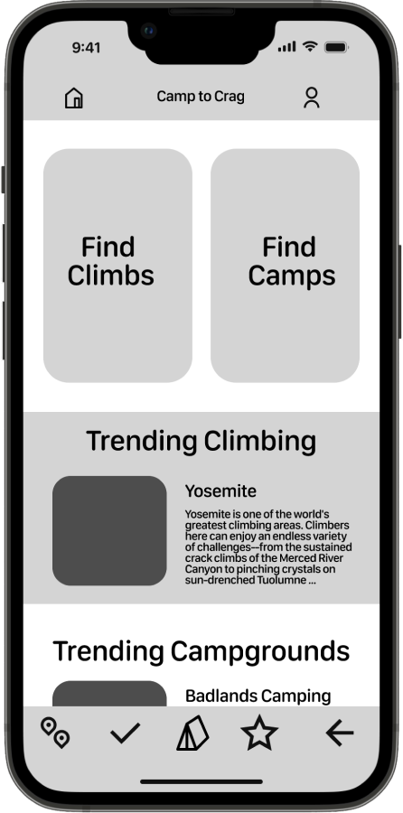

The Problem
It can be difficult to find comprehensive information about camping, hiking, and climbing within state and
national park websites. There is a clear need for a streamlined and effortless outdoor booking experience
designed for nature trip enthusiasts. How might we combine published, public, and individual insight
information on outdoor activity locations to create positive experiences for individuals researching,
booking, and executing nature based vacations?
Goal: Create a mobile app for rock climbers who want to book campsites near their climbing
destinations.
Type: Mobile App Design
Duration: Four Weeks
Skills: User Research, Wireframing, Prototyping, Figma
Responsibility: All research and design
Design Thinking Process
The double diamond process was followed to ensure a proper design thinking process
Empathize
User Research
User Interview
User Survey

Define
User Persona
User Journey Map
Goal Statement
Empathy Map
Ideate
Feature Prioritization
I like, I wish, What if
User Flow
Competitor Analysis
Design
Paper Wireframes
Visual Design
Prototype
Test
Check Usability
Survey Insight
Improvements
Empathize
User interviews were conducted to collect qualitative data from participants. A survey created before the
interviews were sent to participants after the interviews were conducted along with posted on Instagram to
collect additional insight. These were done in an attempt to better understand the current holes in the
market around outdoor focused travel apps.
I have gone to places where on Yelp they said was horrible, but when I went there it was awesome and
vice versa, somebody said it was amazing, and it was horrible.
Since I typically camp in national parks and stuff like that, their sites aren't great. They're kind
of old school. And sometimes it's kind of hard to navigate the page or even find the camping page on
the website.
61.1%
of users say it is difficult to find a campsite without a reservation
58.3%
of users say it is difficult to find information on climbing locations
Define
Many users have reported difficulties in utilizing state park websites to book campsites and obtain precise
information on climbing locations. Novice outdoor enthusiasts, in particular, often find themselves
intimidated by the process of reserving a spot and planning their trip, owing to the prevalence of outdated
and ambiguous information regarding climbing locations. To address these concerns, a user persona was
developed to encapsulate the findings.
Elijah, a beginner outdoor enthusiast, who has become an avid hiker and rock climber needs a way to
organize and book his outdoor excursion in Yosemite next month because he wants to guarantee a
campsite and feel prepared for his daily outings, but is having a hard time navigating the national
park website and getting his questions answered in a reliable and comprehensive way.
1
Users need the ability to book their campsites ahead of time with ease.
2
Users need to be able to find campsites that are nearby their desired climbing area.
3
Users need comprehensive and accurate information on their climbing destinations.
Ideate
After identifying the users needs, feature prioritization was executed to translate these goals into
actionable features within the app. A value proposition analysis was done in order to understand the needs
of the user in relation to the potential features. Additionally a competitor analysis was completed to
compare features of competing apps. Lastly, multiple user flows were created to create a seamless experience
for the user.
Mountain Project
While the Mountain Project app provides a wealth of information for climbers, its user interface can
be overwhelming and difficult to navigate at times, especially for new users. Additionally, the
app's search functionality could be improved to make it easier to find specific climbing routes or
areas. Lastly, while the community engagement features are a valuable aspect of the app, some users
have reported issues with spam and inappropriate content on the platform.

Campspot
The Campspot app provides users with a streamlined and easy-to-use interface for discovering and
booking campsites across the United States. However, some users have reported issues with the app's
accuracy of campsite availability and pricing, which can lead to frustration during the booking
process. Additionally, while the app offers some filters for refining search results, it could
benefit from additional options to help users find campsites that meet their specific needs.
Recreation.gov
The Recreation.gov app offers a comprehensive platform for discovering and booking campsites, cabins,
and other recreational activities across the United States. However, some users have reported
difficulty with the app's user interface, which can be confusing and difficult to navigate at times.
Additionally, the app's search functionality could benefit from additional filters and sorting
options to help users find relevant results more easily.
Problem
Solution
Design
Taking into consideration the goals established during the definition and ideation stage, wireframes were
produced to address the pain points experienced by users. This solution enables users to efficiently locate
campsites in close proximity to their favored climbing destinations before their arrival. Furthermore, users
have access to real-time updates on campsite availability, eliminating the need to refer to state park
websites. In addition, users can access detailed information on their climbing destination, including
difficulty level, helpful feedback from other climbers, and an accurate map of the approach to the climb.
Sketches
Low Fidelity Sketches

Conclusion
Taking into consideration the goals established during the definition and ideation stage, wireframes were
produced to address the pain points experienced by users. This solution enables users to efficiently locate
campsites in close proximity to their favored climbing destinations before their arrival. Furthermore, users
have access to real-time updates on campsite availability, eliminating the need to refer to state park
websites. In addition, users can access detailed information on their climbing destination, including
difficulty level, helpful feedback from other climbers, and an accurate map of the approach to the climb.